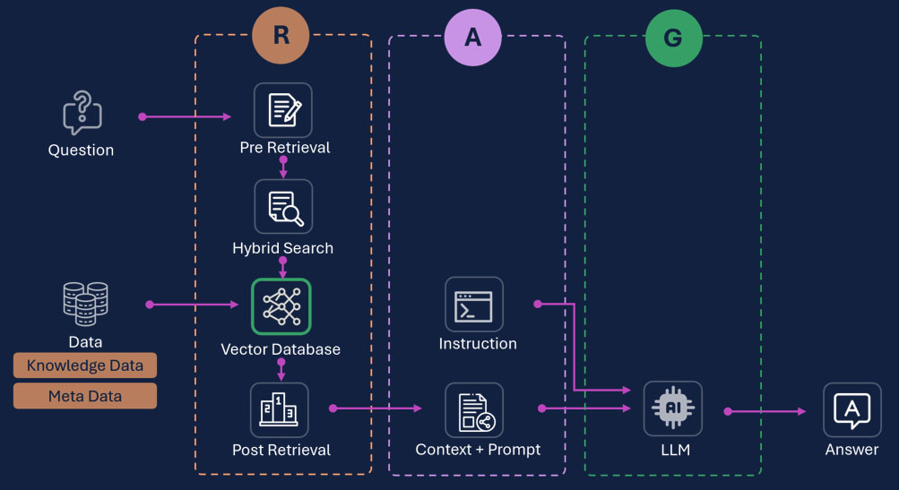
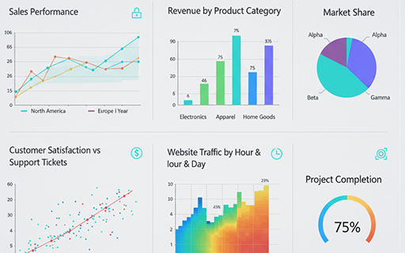
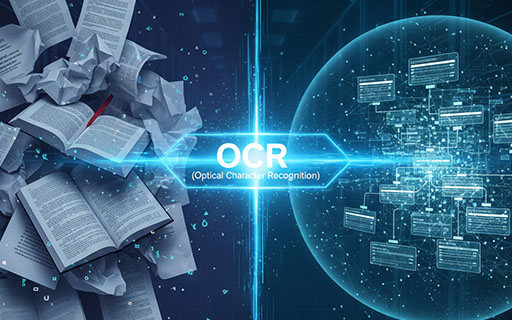

엘투 에이아이
AX를 통한 비즈니스 혁신의 시작
기술력: 정확하고 신뢰할 수 있는 AI의 핵심, Advanced RAG
왜 RAG인가?
LLM의 환각(Hallucination) 현상을 최소화하고, 기업이 보유한 최신 데이터와 고유 지식을 AI가 학습하여 정확한 답변을 생성하게 하는 핵심 기술입니다.
왜 '우리의' RAG인가?
POS-Ai의 진보된 RAG 아키텍처는 복잡한 질의를 다각도로 분석하고, 데이터 수집부터 지식화, AI 분석까지 전 과정을 자동화하여 고객사에 최적화된 인사이트를 도출합니다.

데이터가 경영이 되는 솔루션
POS 데이터 기반 AI 경영 컨설팅: POS-Ai
방대한 POS 데이터의 잠재력을 RAG & LLM 시스템으로 자동 분석하여 경영 인사이트를 제공합니다. 누구나 자연어 챗봇으로 쉽게 질문하고 매출 증대와 비용 절감을 위한 컨설팅을 받을 수 있습니다.
- ✓ KPI 성과 지표 대시보드
- ✓ 고객 구매 행동 심층 분석
- ✓ 충성 고객 및 상품 판매 성과 분석
- ✓ 재고 및 인력 관리 컨설팅

확장 솔루션: 비정형 데이터의 AI 지식화
L2AI는 POS 데이터와 같은 정형 데이터를 넘어, 기업 내부에 잠자고 있는 모든 비정형 데이터를 완벽하게 자산화합니다. 계약서, 보고서, 기술 매뉴얼 등 활용하기 어려웠던 방대한 자료를 L2AI의 OCR 및 데이터 구조화 기술을 통해 AI가 즉시 활용 가능한 '지식 데이터'로 변환합니다.
이렇게 구조화된 모든 문서는 L2AI의 Advanced RAG 시스템과 즉시 연결되어 전사적인 지식 검색, 사내 매뉴얼 기반 챗봇, 계약서 자동 분석 등 즉각적인 업무 자동화와 생산성 향상을 실현합니다.
